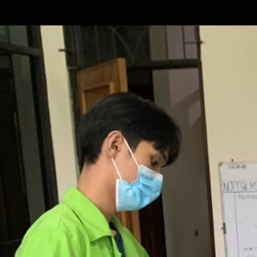

Nama Lengkap: Muhammad Deriansyah
Program Studi: Akuakultur
Fakultas: Perikanan dan Ilmu Kelautan
Email: deriansyah471@gmail.com
Website modern BPM FPIK UBT dengan sistem card dinamis, responsif, dan interaktif. Dibangun menggunakan HTML5, CSS3, dan desain yang berfokus pada pengalaman pengguna.
#UntukFPIKKamiAda